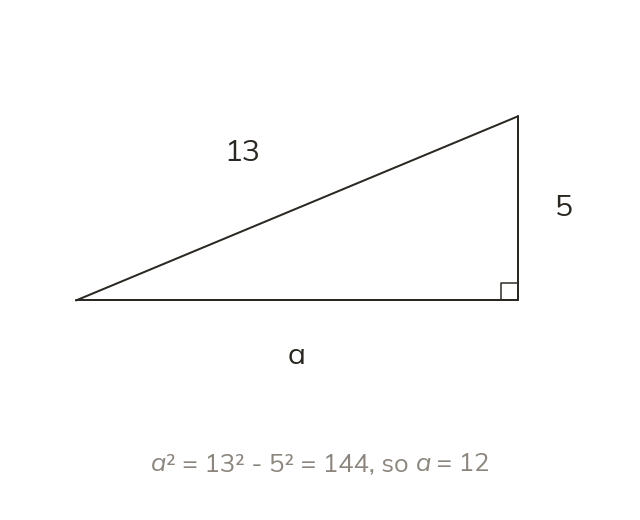

Rearranged for a shorter side
To find a shorter side, rearrange: a² = c² − b². Finding a shorter side subtracts the squares.
The same theorem finds a shorter side when it is rearranged to a² = c² - b². Finding a shorter side subtracts, while finding the hypotenuse adds.